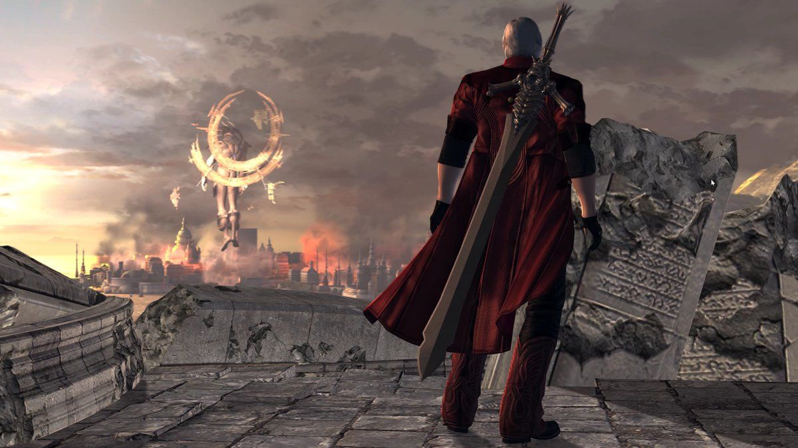

Hi! I'm Savanna. Recently I've been exploring a lot of single-player games, especially older titles and GBA games.
Favorite Game
Devil May Cry 4

this game is really fun, actually on my first playtrough it feels really hard because this is my first dmc game
Played Recently
Retro Games
i've been exploring GBA (Gameboy Advance) game and there is sum games that i like

Kirby Nightmare in a dream land

Zelda: the minish cap
About Me
growing up i love playing games but all of my childhood game are multiplayer game like cod, fortnite etc. now that i found a singleplayer game is also fun and trying to explore what games did i missed C;